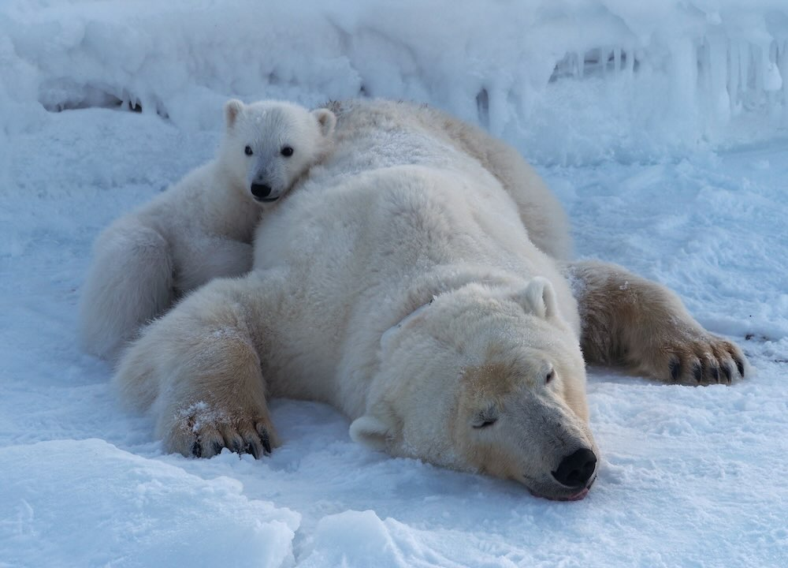

Polar Bears are in Better Physical Shape than 25 Years Ago, Despite Sea Ice Losses

Polar bears are in better physical health than they were 25 years ago, despite the decrease in sea ice, reveals new research. The well-being of the iconic white mammals living around the Norwegian island of Svalbard has improved in the face of climate change, likely due to better opportunities to hunt. The scientists were ‘surprised’ that the bears’ fat reserves have increased since the year 2000, even while sea ice levels decreased. The findings, published in the journal Scientific Reports, are in contrast to previous observations of polar bear population declining across the Arctic. Previous research shows temperature increases in the Barents Sea around Svalbard of up to two degrees Celsius per decade since 1980. The Barents Sea polar bear population numbered around 2,650 individuals in a 2004 census—and the population appears not to have shrunk in size, although the reasons for that have been unclear. So, Dr. Jon Aars, senior scientist at the Norwegian Polar Institute, investigated with his colleagues the potential reasons for the stability of the Svalbard populations. The team used data from 1,188 body measurement records of 770 adult polar bears taken on Svalbard between 1992 and 2019.

They compared changes in the bears’ body composition index (BCI), an indicator of fat reserves and body condition determined by tape measurement, to the number of ice-free days in the region across the 27-year period.